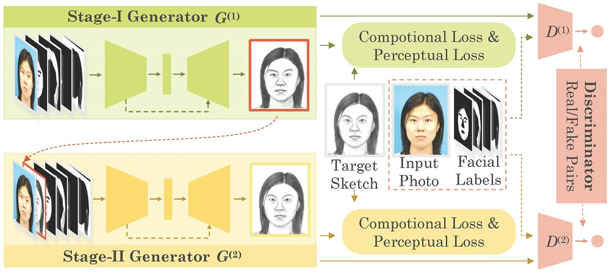
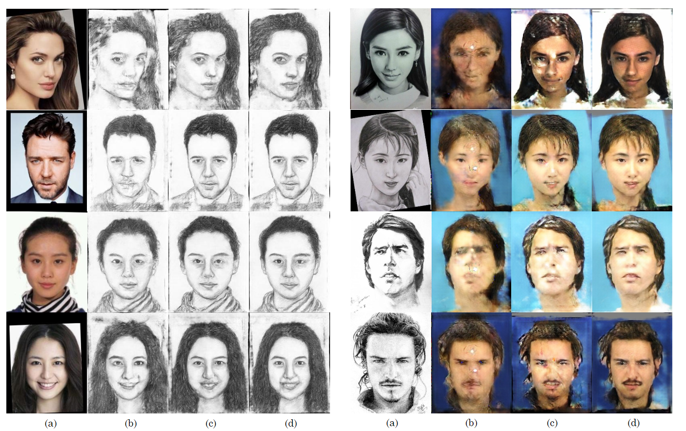

Towards Realistic Face Photo-Sketch Synthesis via Composition-Aided GANs (CA-GAN)
Published in March 5, 2020
Recommended citation: https://ieeexplore.ieee.org/document/9025751
[Paper@IEEE] [Project@Github] [Paper@arxiv] [Project Page]
Our Proposed Framework
Generator Architecture of CA-GAN

Stacked CA-GAN (SCA-GAN)

Sample Result
left: sketch synthesis; right: photo synthesis

(a)Input Image, (b)cGAN, (c)CA-GAN, (d)SCA-GAN
Prerequisites
- Linux or similar environment
- Python 2.7
- NVIDIA GPU + CUDA CuDNN
Getting Started
Installation
-
Clone this repo:
shell script git clone https://github.com/fei-hdu/ca-gan cd ca-gan -
Install PyTorch 0.4+ and torchvision from http://pytorch.org and other dependencies (e.g., visdom and dominate). You can install all the dependencies by
shell script pip install -r requirments.txt
ca-gan train/test
- Download a dataset(CUFS split train and test with this files)
- Download the VGG-Face model. Here we convert torch weight to pyTorch to fit our frame, you can download our converted model directly: Google Drive
- Get face parsing
- here we use Face Labling to get face parsing
- Check out the new parsing branch to get the our newly used
- Train a model
shell script python main.py --model_vgg {model path} - Test the model
shell script python test.py --dataroot {data path} --fold {epoch number}- The option
foldis used for load./checkpoint/netG_epoch_'+fold+'.weightand you can edit it intest.py
- The option
Pre-trained models
- A face $photo \mapsto sketch$ model pre-trained on the CUSF:
- CA-GAN： [Google Drive] [Baidu Cloud](pwd：tu9l)
- SCA-GAN (code & model): [Google Drive] [BaiDu Cloud] (pwd: 6dxk)
- SCA-GAN：A face photo2sketch model and a face sketch2photo model pre-trained on the CUFS[BaiDu Cloud](pwd:2xz5) uses new parsing network(Bisenet)[BaiDu Cloud](pwd:tqek)
- The pre-trained model need to be save at
./checkpointand named it asnetG_epoch_'+fold+'.weight - Then you can test the model
Datasets
Result
- Our final result with new parsing can be downloaded: Google Drive
Training/Test Tips
Best practice for training and testing your models. Feel free to ask any questions about coding. Xingxin Xu, jehovahxu@gmail.com
Citation
If you find this useful for your research, please cite our paper as:
@article{gao2020ca-gan,
title = {Towards Realistic Face Photo-Sketch Synthesis via Composition-Aided GANs},
author = {Jun Yu and Xingxin Xu and Fei Gao and Shengjie Shi and Meng Wang and Dacheng Tao and and Qingming Huang},
booktitle = {IEEE Transactions on Cybernatics},
doi = {10.1109/TCYB.2020.2972944},
year = {2020},
url = {https://github.com/fei-hdu/ca-gan},
}
Acknowledgments
- Our code is inspired by the pytorch-CycleGAN-and-pix2pix repository.
- This work is greatly supported by Nannan Wang and Chunlei Peng. (HIT@Xidian University)